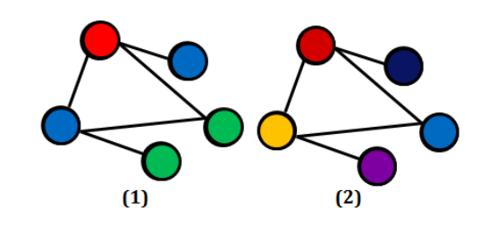

Kolorowanie grafów w skrócie
Ogólna definicja
Klasyczne kolorowanie grafu polega na przypisaniu określonym elementom składowym grafu (wierzchołkom, krawędziom lub ścianom) wybranych kolorów (etykiet) według ściśle określonych reguł. W praktyce zamiast kolorów stosuje się kolejne liczby całkowite, zaczynając od zera lub jedynki.Problemy kolorowania grafów należą do najtrudniejszych problemów kombinatorycznych w sensie złożoności obliczeniowej. Skonstruowanie algorytmu jest NP-trudne (czyli złożoność znaleznienia rozwiązania jest wykładnicza), chyba że P = NP. Dlatego kluczowe jest określenie granicy pomiędzy przypadkami obliczeniowo łatwymi, tj. wielomianowymi, które tworzą klasę P oraz trudnymi, czyli tzw. NP-zupełnymi (NPC).
Wierzchołkowe kolorowanie grafów
Polega na przypisaniu wszystkim wierzchołkom w grafie kolorów tak, aby żadne dwa sąsiednie wierzchołki (czyli takie, które są połączone krawędzią) nie miały tego samego koloru – wtedy pokolorowanie nazywamy legalnym lub dozwolonym.
Istotna w tym problemie jest optymalizacja kolorowania. Kolorwanie optymalne to takie legalne pokolorowanie, które zawiera najmniejszą możliwą liczbę kolorów (rys.1). Kolorowanie z rys. 2 jest legalne (prawidłowe), ale całkowicie nieoptymalne. 
Optymalne pokolorowanie danego grafu opisuje liczba chromatyczna grafu x(G). Określa ona minimalną ilość kolorów potrzebną do pokolorowania danego grafu.
Przykładowe algorytmy kolorowania
Algorytm zachłanny
Jednym z algorytmów kolorujących grafy jest prosty algorytm zachłanny, który działa w sposób następujący:Kolory są reprezentowane przez kolejne liczby 0,1,2,... Wybieramy w grafie dowolny wierzchołek i kolorujemy go pierwszym kolorem nr 0. Dla każdego z pozostałych wierzchołków grafu kolor ustalamy jako najniższy kolor, który nie jest użyty przez żadnego z jego sąsiadów.
Algorytm heurystyczny
Zmieniając odpowiednio kolejność przetwarzanych w algorytmie wierzchołków, da się uzyskać lepsze przybliżenie kolorowania dokładnego. Na tej zasadzie działają różne algorytmy heurystyczne.Algorytm LF (Largest First)
Jest jednym z najprostszych algorytmów heurystycznych.Działanie: 1. Uporządkuj wierzchołki grafu malejąco według ich stopni (liczby krawędzi z nich wychodzących).
2. Koloruj wierzchołki zachłannie, zgodnie z ustaloną wcześniej kolejnością (zaczynając od wierzchołka o największym stopniu).
Jest to algorytm statyczny - raz ustalona kolejność wierzchołków nie zmienia się w trakcie jego działania.